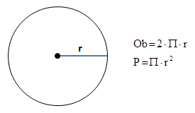
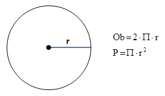

Zadanie 3
Zdefiniuj stałą przechowującą wartość liczby Π (przyjmij, że wynosi ona 3.14) oraz zmienną przechowującą długość promienia koła. Oblicz obwód i pole figury, a następnie wyprowadź wyniki na ekran.
Więcej o stałych w JavaScript Zdefiniuj stałą przechowującą wartość liczby Π (przyjmij, że wynosi ona 3.14) oraz zmienną przechowującą długość promienia koła. Oblicz obwód i pole figury, a następnie wyprowadź wyniki na ekran.
Więcej o stałych w JavaScript 